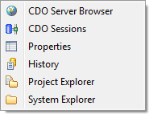

Managing Repositories


Managing Repositories |
|
CDO stores models and meta models in repositories. These repositories need to be created or, if they already exist on a remote server, connected before they can be used in Eclipse. The management of these repository connections happens in the CDO Repositories View.
Currently CDO supports two different types of repository connections:
repository in the context of the CDO Explorer user interface refers to a connection
to a core-level IRepository, as opposed to referring to the IRepository itself. Information on
operating a CDO server and on creating and managing an IRepository can be found in the Operator's Guide.
The following sections explain how to create, rename, connect, disconnect, or delete repositories and how to work with branches.
Table of Contents
The CDO Repositories View provides a uniform way to work with different types of CDO repositories. Only at creation or connection time the differences between the repository types become apparent.
The following sections explain how to use the different repository creation or connection wizards. Each of them can be started by clicking on the green plus button on the CDO Repositories view's toolbar:
To create an online connection to an existing remote repository the first type option must be selected on the first wizard page:
A double-click on the type option or a single click on the Next button advances to the next wizard page, on which the label of the new connection and information about the remote server, the repository on that server, and optionally login credentials need to be entered:
The label identifies the connection to the remote repository. It must be unique among all configured connections in the current workspace. It can also be changed later, see Renaming Repository Connections.
The host and port fields specify the server of the repository to connect to, more exactly the IAcceptor
on that server that accepts connection requests for the targeted repository. See Configuring Acceptors for operator details.
The repositories list shows the repositories that are discovered on the targeted server. Selecting a discovered repository in this list copies the name of the selected repository into the repository name field.
The repository name field identifies the targeted repository on the specified CDO server. See Element repository on how to configure repository names on a CDO server.
The user name and password fields are only enabled if the targeted repository supports authentication. See Managing Security on how to configure authentication and authorization in CDO repositories.
Cloning master repositories is not yet supported in the user interface.
To create a new local repository and add an online connection to it the third type option must be selected on the first wizard page:
A double-click on the type option or a single click on the Next button advances to the next wizard page, on which the label of the new connection and information about the new local repository need to be entered:
The label identifies the connection to the new local repository. It must be unique among all configured connections in the current workspace. It can also be changed later, see Renaming Repository Connections.
The repository name field specifies the name of the new local repository. It must be unique among all local repositories in the current workspace. The name of the repository can, in contrast to the label of the connection, not be changed anymore, once the repository is created.
The versioning mode determines whether the history of changed models is preserved (for example to be used in Online Historical Checkouts and with the CDO Time Machine View) and whether branches are supported. The versioning mode of the repository can not be changed anymore, once the repository is created.
The ID generation determines where (server or client) and how (counters or UUIDs) IDs for new model elements are generated. Server-side counter IDs are the more efficient option, but they prevent the repository to be used in replicated scenarios, such as offline clone repositories or offline checkouts. For those scenarios client-side UUIDs should be selected. The ID generation of the repository can not be changed anymore, once the repository is created.
The optional TCP port field specifies on what port a ITCPAcceptor will accept incoming connection requests.
By default this option is disabled because local repositories run in the same Java VM as the hosting Eclipse IDE, and are
always accepting connection requests from there through an implicit IJVMAcceptor, too.
CDO supports renaming an existing repository connection, i.e., changing its label, at any time, even when checkouts from that repository already exist. A repository connection can be renamed by selecting it and pressing the F2 key or selecting the Rename action in the context menu. The following dialog will pop up:
The dialog can only be finished with the OK button if the repository label is either unchanged or changed to a not existing label.
An existing repository connection can be deleted by selecting that repository connection and pressing the Del key or selecting the Delete action in the context menu. The following dialog will pop up:
If checkouts exist for the repository connection to be deleted the following warning dialog will pop up first:
If the deletion of the existing checkouts is confirmed the checkout deletion dialog is popped up as explained in Deleting Checkouts.
To work with a configured repository, e.g. to create branches (see Creating Branches) or checkouts (see Checking Out from Repositories, the repository must be in connected state. Directly after creation a repository is connected. Directly after the startup of Eclipse all repositories are in disconnected state.
If a repository is disconnected it can be connected by double-clicking it or by selecting Connect in its context menu. It is automatically connected when an existing checkout from this repository is opened.
If a repository is connected it can be disconnected by selecting Disconnect in its context menu. It is automatically disconnected when the configured timeout period has elapsed and the repository wasn't used during that period.
Repositories can be shown in a number of other views depending on the type of the repository by selecting them, opening their context menu, opening the Show In sub menu, and selecting one of the Show In actions.
Local repositories can be shown in the following views:

Remote repositories can be shown in the following views:
All repositories can be shown in the CDO Sessions view:

A new session with the same target repository as the selected repository is opened in the CDO Sessions view.
Local repositories can be shown in the CDO Server Browser:

The CDO Server Browser allows to introspect the internal data of the local repository in a web browser. It is only meant to be used for test and debug purposes. It is not meant to be a production tool that would scale to arbitrary repository sizes!
All repositories can be shown in the Properties view:

All repositories can be shown in the History view:

This is particularly useful if the "Link with Editor and Selection" button in the toolbar of the History view is not enabled and the history page does not automatically adjust to the workbench selection.
All repositories can be shown in the Project Explorer, which means that all configured checkouts from the selected repository will be selected.
All repositories can be shown in the System Explorer:
Each repository owns a dedicated directory under .metadata of the current workspace. This directory contains the repository.properties file that contains the configuration of the repository. Local repositories also store the database of the local repository in this directory.